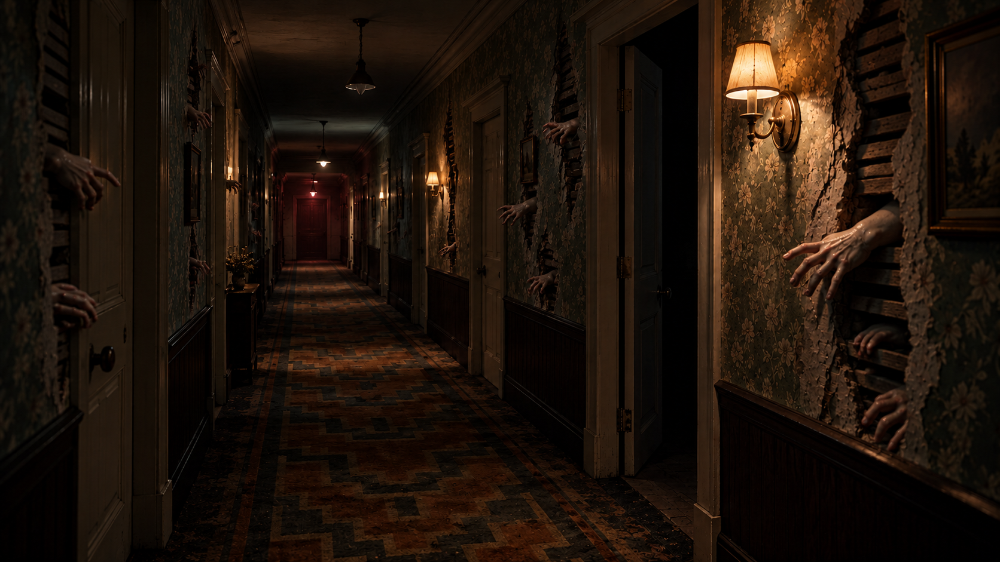
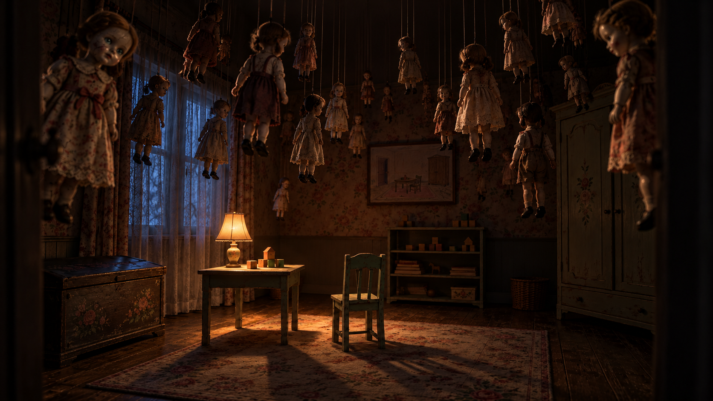

01 / 墙里伸出的手

完整门框和重复壁灯建立参照；部分墙纸露出木条与黑色夹层。近处手形可读，深处逐渐变密。制作拆为破墙浅景片、三组手姿与墙面母材质，优先复用。
待确认 · 不代表游戏中已有此事件；浅景片不改变墙体碰撞。整体保持黑暗、旧住宅的真实尺度与少量手绘质感。异常来自遮挡、过量、空位和窥视。这两张为概念图，等待确认后制作新模型。

完整门框和重复壁灯建立参照；部分墙纸露出木条与黑色夹层。近处手形可读，深处逐渐变密。制作拆为破墙浅景片、三组手姿与墙面母材质，优先复用。
待确认 · 不代表游戏中已有此事件；浅景片不改变墙体碰撞。
暖光留给空椅，冷窗光勾出人偶轮廓。重复玩偶与单独朝向镜头的一只形成差异。拆为三种玩偶母型、肩部牵线、服装变体，悬挂高度需服从通行净空。
待确认 · 使用少量母型组成群体；摆动和注视由明确事件控制。